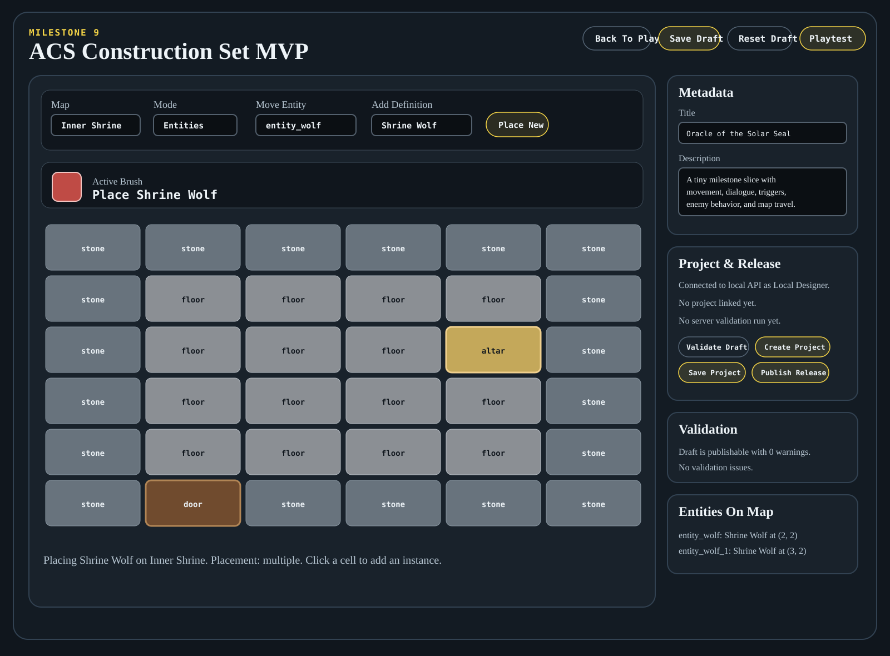

ACS Milestone 20
System Reference
A technical map of how ACS fits together, with concrete end-to-end flows for runtime movement, exits/portals, inspection, editor tile painting, entity placement, validation, persistence, and rendering.
High-Level Architecture
| Area | Package or app | Responsibility |
|---|---|---|
| Shared vocabulary | packages/domain | IDs, maps, entities, triggers, dialogue, actions, and conditions. |
| Content ingestion | packages/content-schema | Reads raw authored content and normalizes it into an AdventurePackage. |
| Simulation | packages/runtime-core | Commands, state mutation, triggers, dialogue, enemy turns, snapshots, and events. |
| Rendering | packages/runtime-2d | Draws runtime state to canvas without owning game rules. |
| Editing | packages/editor-core | Pure draft operations such as setTileAt, addEntityInstance, and moveEntityInstance. |
| Validation | packages/validation | Publish-readiness checks shared by browser and API. |
| Persistence | packages/persistence | IndexedDB runtime saves and local editor drafts. |
| Backend | apps/api | Projects, releases, validation endpoint, and file-backed storage. |
Data Model Layers
RuntimeSnapshot, so persistence does not invent a second save-game model.Current Screens


Runtime Input To Rendering
Runtime input follows a narrow path: apps/web/src/index.ts turns browser input into a PlayerCommand, runtime-core mutates session state and emits events, then the browser updates panels and asks runtime-2d to redraw.
Use Case 1: Move Command
- The keydown handler in
apps/web/src/index.tsmaps Arrow keys andWASDto{ type: "move", direction }. runCommandcallssession.dispatch(...), appends returned events, and callsrenderEverything.dispatchcallshandleMoveand uses the returned boolean to decide whether the command consumed a turn.handleMovecomputes the next coordinate, rejects bounds or occupied destinations, or updatesstate.player.- If the destination is an exit, the engine changes
currentMapId, teleports the player, and runs map-load and tile triggers. - If movement succeeded,
dispatchincrementsstate.turn, emitsturnEnded, and runs the enemy phase. - The browser updates map name, player position, flags, inventory, dialogue, event log, and canvas.
Current behavior: blocked movement does not consume a turn and does not grant enemies a free action. Enemy behavior profiles may define turnInterval; the sample Shrine Wolf uses turnInterval: 3, so it only acts on every third successful player turn.
Use Case 2: Inspect Command
- The browser maps
Qto{ type: "inspect" }. dispatchcallshandleInspect(undefined, events)and treats a completed inspection as a turn-consuming action.- With no explicit direction,
findEntityInDirectionsearches for the first active adjacent entity on the current map. - If an adjacent entity exists, the engine emits
inspectResultfor that entity. - If no adjacent entity exists, the engine emits an
inspectResultdescribing the player's current coordinate and map id. - Inspect does not directly move the player, grant items, set flags, or start dialogue.
dispatchincrementsstate.turn, emitsturnEnded, then runs the enemy phase. Enemies still respect their configuredturnInterval.
Use Case 3: Editor Tile Brush
- The designer selects
Tilesmode and picks a tile id. The browser stores it inselectedTileId. renderBrushPreviewupdates the visible active brush.- Each grid cell has a
pointerdownhandler in tile mode. Pressing a cell callsbeginTileBrush(x, y). beginTileBrushsetsisTileBrushActive = true, clears the duplicate-cell guard, and callspaintTileAt.paintTileAtskips if the editor is not in tile mode, if the same cell was already painted in this drag, or if the cell already has the selected tile.- If the tile differs, the browser calls
setTileAt(draft, currentMapId, x, y, tileId)fromeditor-core. setTileAtclones the package, finds the map and active layer, calculatesindex = y * map.width + x, writes the tile id, and returns a new draft.- The browser refreshes the changed grid cell, reruns local validation, and updates project/publish controls.
- Dragging into another cell calls
paintTileAtthroughpointerenter. Pointer up ends the brush.
Use Case 4: Editor Entity Placement
- The designer switches to
Entitiesmode. - The editor shows
Move Entity,Add Definition, andPlace New. - Choosing a reusable definition stores
selectedEntityDefinitionIdand enters new-instance placement mode. singletondefinitions are blocked after one instance exists anywhere in the adventure.multipledefinitions can be placed repeatedly.addEntityInstanceclones the package, creates a unique id, pushes anEntityInstance, then validation and grid rendering rerun.
Editor To Playtest
Painting a tile changes only the editor draft. To see it in play, the editor saves the draft to IndexedDB and opens the runtime with a draft query parameter. The runtime loads that same AdventurePackage, so there is no separate editor-only map format.
Validation, Publishing, Save, And Load
Validation and publishing
- Local edits rerun
validateAdventure(draft). Validate Draftcalls the API validation endpoint.- Project save and publish are disabled when local validation is blocking.
- The API validates again before creating an immutable release.
Runtime save/load
Savecallssession.serializeSnapshot().persistence.saveSessionstores the snapshot in IndexedDB.Loadretrieves the record and callsengine.loadAdventure(activeAdventure, snapshot).- The browser rerenders from restored state.

Forward Milestone Path: Classic ACS Feel
The project should deliberately capture the feel of the original 1980s Adventure Construction Set while keeping the engine free of renderer assumptions. The legacy image set points to two major tracks: a classic gameplay panel and deeper construction-set authoring tools.
Classic runtime presentation
The classic runtime mode should be a presentation layer over the same AdventurePackage, RuntimeSnapshot, and GameSessionState used by the current renderer.
- fixed-aspect vintage gameplay panel
- tile/icon map viewport on a dark field
- right-side status rail with clearly labeled life, power, and future actor-resource meters
- bottom message band for location names, prompts, scrollable Classic ACS dialogue, interaction text, and command hints
- pixelated sprite scaling and controlled palette
- asset IDs resolved through manifests so the same map can later render with HD or 3D assets
Classic editor capability track
The original editor suggests future modes for terrain pictures, thing pictures, creature pictures, map/floor wiring, reusable definitions, actor profiles, possessions, triggers, portals, text, and dialogue.
- Milestone 10: completed
classic-acsvisual mode with a gameplay viewport, right status rail, bottom message band, and renderer theme switching. - Milestone 11: completed sprite manifests, a first classic asset set, entity sprite IDs, manifest-driven classic renderer lookup, and validation warnings for missing sprite references.
- Milestone 12: completed entity definition editing for reusable metadata, placement policy, sprite asset ids, faction, and behavior tuning.
- Milestone 13: completed dialogue text editing and structured trigger editing for existing records.
- Milestone 14: completed map categories, current-map structure metadata editing, and blank map creation.
- Milestone 15: completed richer entity profiles, skills, starting possessions, runtime party/profile/inventory rendering, editor fields, and validation checks.
- Milestone 16: completed no-code trigger/action construction for existing trigger records, including guided condition/action add/remove controls and an advanced JSON mirror.
- Milestone 17: completed trigger creation, duplication, deletion, map-cell trigger markers, and trigger reference summaries.
- Milestone 18: focused editor workspaces for Adventure, World Atlas, Map Workspace, Libraries, Logic, and Test & Publish.
- Milestone 19: map context selectors and classified libraries.
- Milestone 20: exits, portals, and map graph tools.
- Milestone 21: tile definition library with passability, tags, and visual bindings.
- Milestone 22: quest and objective builder.
- Milestone 23: creature interaction, combat, drops, and defeat triggers.
- Milestone 24: asset pack and visual-mode authoring.
- Milestone 25: authoring diagnostics and playtest harness.
- Milestone 26: import/export and schema migration hooks.
- Milestone 27: editor information architecture completion around the Proposed Editor Areas.
- Milestone 28: Classic ACS presentation polish and accessibility scaling.
- Milestone 29: validation, testing, content QA, and documentation acceptance checks.
- Milestone 30: MVP packaging with an Adventuria-inspired sample adventure.
Milestone 20 Exits, Portals, And Map Graphs
Milestone 20 turns travel between maps into first-class authored data. A map owns zero or more ExitDefinition records. Each exit has a source coordinate on that map plus a target map and target coordinate. The same data powers editor summaries, validation checks, and runtime teleportation.

| Layer | Object or function | Role |
|---|---|---|
| Domain | ExitDefinition | Stable data record with id, x, y, toMapId, toX, and toY. |
| Editor core | listExitsForMap, upsertExitDefinition, deleteExitDefinition | Pure draft operations that clone the package before modifying map exit arrays. |
| Browser editor | Exits & Portals layer mode | Lets the designer choose target map/coordinate, click a grid cell, and inspect or update exits. |
| Runtime core | handleMove | After a successful move, checks whether the destination cell has an exit and transfers the player. |
| Validation | validateExits | Reports broken target maps, out-of-bounds source/target coordinates, and suspicious overlaps. |
Exit Authoring Sequence
Runtime Move Through An Exit
dispatch({ type: "move", direction: "south" })
-> handleMove(direction, events)
-> compute nextX/nextY
-> reject bounds or occupied cells
-> update player position and emit playerMoved
-> find currentMap.exits at the new coordinate
-> if found: set currentMapId, player.x, player.y
-> emit teleported
-> run map-load triggers for the target map
-> run tile triggers at the arrival coordinate
-> render the new snapshotThis means exits are not a renderer trick. The player first moves onto the source cell. Runtime-core then changes the canonical session state to the destination map and coordinate. After that, runtime-2d simply renders whatever the new snapshot says.
Map Graph Derivation
The map graph is intentionally derived, not stored. The editor builds rows by walking draft.maps.flatMap(map => map.exits) and rendering each source map to target map edge. That design avoids a second graph model that could drift out of sync with the real exit records.
Validation has the same source of truth. It can verify that every exit points to an existing map, that source and target coordinates are inside their maps, and that authors can notice risky patterns such as multiple exits on the same source cell.
Quality Cleanup Folded Into Milestone 20
The milestone also applies the cleanup policy going forward: changed functions must stay at cyclomatic complexity 8 or lower, SOLID-style separation must not regress, and extracted helpers should make code easier to hold in your head. During this milestone, the browser grid/edit flow was split into smaller functions such as wireGridCell, wireTileBrushCell, renderExitBrushPreview, editorHintForMode, selectExistingExit, and buildExitInput. The complexity baseline now tracks 31 legacy violations to pay down over time, and the Milestone 20 changes add no new complexity violations.
Milestone 19 Map Context And Classified Libraries
Milestone 19 extends the focused workspace idea downward into the data model. The editor can now keep map context close to map work, and the content schema can classify reusable objects instead of leaving future concepts as typed strings.
packages/domaindefines library categories, skills, traits, spells, flags, and custom library objects.packages/content-schemanormalizes missing arrays and migrates legacy profile skills into skill ids.packages/validationchecks category references and entity skill/trait references.apps/web/editor.htmladds map selectors inside Map Workspace and Logic, plus a Library Focus selector for entities, items, skills, traits, spells, dialogue, flags, quests, tiles, assets, and custom objects. Its title, help text, focused object list, category list, category creator, and object-specific editor visibility change with the selected object class.
Milestone 18 Focused Editor Workspaces
Milestone 18 changes the editor from a long all-panels dashboard into a focused workspace switcher. The browser page still uses the same editor-core operations and AdventurePackage draft, but the visible UI is filtered by the authoring area selected in the left Edit Flow navigation.
apps/web/editor.htmlmarks navigation links withdata-editor-areaand editable sections withdata-editor-areas.apps/web/src/editor.tstracksactiveEditorArea, supports direct URL hashes, and callsrenderActiveEditorArea().apps/web/styles.csshides inactive editor cards and displays only the active workspace's relevant panels.
Milestone 17 Trigger Creation And Linking
Milestone 17 turns trigger editing into trigger authoring. It adds record-level operations and a spatial attachment workflow so rules feel like things placed in the world.
New editor-core operations are createTriggerDefinition, duplicateTriggerDefinition, and deleteTriggerDefinition. The browser editor adds Create Trigger, Duplicate, and Delete controls, plus a Trigger Markers Map Workspace mode.
Cells with attached triggers show a small marker chip. The trigger editor also shows a Referenced Objects list summarizing linked maps, flags, items, quests, dialogue, teleports, and tile changes.
Milestone 16 No-Code Trigger And Action Builder
Milestone 16 makes trigger authoring feel more like a construction set and less like data surgery. The underlying model did not change: triggers still store conditions: Condition[] and actions: Action[], and runtime-core still evaluates those arrays through conditionsMatch(...) and applyTriggerActions(...). The editor now gives designers guided controls for adding and removing those condition/action objects.
The builder supports flagEquals, hasItem, and questStageAtLeast conditions, plus showDialogue, setFlag, giveItem, teleport, and changeTile actions.
End to end, a shrine reward can require quest_started, show shrine dialogue, grant the Solar Seal, advance quest_stage, and change the altar tile to altar-lit. The same builder can also express a sci-fi transporter, an urban keypad/locked-door behavior, or a spy dossier pickup without changing the engine.
Historical note: Milestone 16 edited existing trigger records only. Milestone 17 adds trigger record creation, duplication, deletion, and map-cell marker placement; brand-new dialogue/item/quest creation still remains future work.
Milestone 15 Entity Profiles And Starting Gear
Milestone 15 enriches reusable EntityDefinition records. Definitions can now carry a profile with stat fields and skills, plus startingPossessions that seed the party inventory when a new runtime session starts.
- The browser editor reads definition form values from
apps/web/src/editor.ts, including life, power, speed, skills, and starting possession text such asitem_oracle_charm:1. - Those values are stored on the reusable
EntityDefinition, not on each placedEntityInstance. Placement still remains map-specific. packages/validationrejects negative/non-integer stats, unknown starting item ids, and invalid starting possession quantities.- When
runtime-corecreates a new session,createInitialInventorywalks the party definition ids instartState.party, finds each definition, and folds itsstartingPossessionsinto inventory state. - The runtime browser UI displays the party, profile summary, and named inventory, while
runtime-2dcontinues to render from state without owning these rules.
This keeps the future path open: combat can read stats, AI can read skills or faction, equipment can read starting possessions, and alternate renderers can present the same data differently.
Milestone 14 Map Structure Editing
Milestone 14 begins the world-structure track. Maps now have optional category metadata: world, region, local, interior, and dungeonFloor. The editor can also create a new blank map with a base tile layer.
New maps start with one base tile layer, a repeated fill tile, no exits, and no placed entities. Exit/portal wiring and map deletion remain later milestones because they require careful reference-safety rules.
Milestone 13 Dialogue And Trigger Editing
Milestone 13 adds construction-set controls for existing dialogue records and structured trigger records. Browser controls gather intent, editor-core clones and updates the AdventurePackage, validation reruns, and playtest loads the same draft package.
Flow: Designer edits dialogue or trigger fields -> apps/web/src/editor.ts parses form values and JSON arrays -> editor-core updates the package copy -> validation reruns -> playtest loads the same draft.
Dialogue editing updates the first node speaker, text, and continue label. Trigger editing updates type, optional map/x/y location, run-once behavior, conditions JSON, and actions JSON. Invalid JSON is rejected by the editor before it can replace the trigger data.
Current limitation: Milestone 13 edits existing dialogue and trigger records. Brand-new record creation, deletion, and a fully visual no-JSON rule builder remain future work.
Milestone 12 Entity Definition Editing
Milestone 12 added browser controls for reusable entity definition metadata. Existing placed entities remain separate EntityInstance records that point back to reusable EntityDefinition records by id.
Milestone 11 Sprite Manifests
Milestone 11 moves the classic visual mode from hardcoded tile and entity assumptions toward manifest-driven presentation data. runtime-core remains renderer-agnostic; runtime-2d reads the adventure's classic-acs visual manifest when deciding how to draw canvas sprites.
AdventurePackage.visualManifestsstores renderer-facing presentation metadata outside the simulation rules.- The sample adventure defines
Classic Solar Seal Sprite Setwith tile entries for grass, path, shrub, stone, floor, altar, door, water, and void. - The Hero, Oracle, and Shrine Wolf definitions now point at stable sprite IDs through
assetId. - The classic renderer resolves a tile/entity sprite from the manifest first, then falls back to built-in defaults for older packages.
- Validation warns when classic sprite references are missing without blocking the project, because fallbacks keep content playable.
Recommended Editor Information Architecture
The current editor works, but its panels are arranged in milestone order rather than authoring order. As the game data grows, the editor should be organized around the relationships in AdventurePackage: Adventure owns Regions, Regions group Maps, Maps contain tile layers, exits, placed entities, and local triggers, while reusable libraries provide definitions that maps and triggers reference.
Proposed Editor Areas
| Area | Purpose | Primary objects | Why it belongs here |
|---|---|---|---|
| Adventure Setup | Project-level identity and rules | Metadata, rules, start state, validation | These affect the whole adventure and should not be mixed into map editing. |
| World Atlas | Spatial structure | Regions, maps, map categories, exits, start position | This is the natural home for Milestone 14 map structure tools. |
| Map Workspace | Editing the selected place | Tile layers, entity instances, local triggers, exits | This is the main canvas-centric construction area. |
| Libraries | Reusable building blocks | Entity definitions, items, dialogue, quests, assets, visual manifests | These are referenced by maps, triggers, and instances. |
| Logic & Quests | Cross-map behavior | Triggers, conditions, actions, quest stages, dialogue links | Logic often connects many objects and needs reference-aware tools. |
| Test & Publish | Workflow actions | Validation, drafts, playtest, projects, releases | These are workflow controls, not content objects. |
Recommended Editor Layout
- The left sidebar chooses the authoring area: Adventure, World Atlas, Map Workspace, Libraries, Logic, or Test & Publish.
- The middle column shows the selected area's object tree, such as Regions with nested Maps.
- The main workspace shows the selected map grid, definition editor, or trigger flow.
- The right inspector shows properties and references for the selected object.
- The bottom rail always shows validation status, unsaved draft status, and playtest/publish actions.
Object-Specific Flows
World Atlas
Shows Regions first, then Maps inside each Region. Selecting a map exposes category, dimensions, region assignment, exits, incoming references, and whether the start state points there.
Map Workspace
Centers on a selected map with tabs for Terrain, Entities, Exits, Triggers, and Preview. Selecting a cell should reveal tile id, occupant, exit, and triggers attached to that coordinate.
Libraries
Holds reusable definitions: entity definitions, item definitions, dialogue, quests, assets, and visual manifests. Each library item should show where it is used.
Logic & Quests
Turns triggers into a When / If / Then builder. This can later replace JSON-first editing while still emitting the same domain TriggerDefinition data.
Dependency Panel Rule
Every selected object should have a dependency panel. This is the most important UI principle for making relationships understandable.
| Selected object | Dependency panel should show |
|---|---|
| Region | Maps inside the region and any region-level notes/source references. |
| Map | Region, exits, entities, local triggers, incoming links, and start-state usage. |
| Map cell | Tile id, occupant, exit, and triggers attached to that coordinate. |
| Entity definition | All placed instances using that definition and any asset reference. |
| Entity instance | Definition, map location, placement constraints, and local triggers if applicable. |
| Dialogue | Triggers/actions that call the dialogue record. |
| Trigger | Every map, dialogue, item, quest, tile, or entity reference used by its conditions/actions. |
Implemented Edit Game Layout
The browser editor now implements the first version of this organization without changing the underlying data model. The same editor functions still update AdventurePackage, but the screen is arranged by information hierarchy.
- Left navigation: the authoring flow from Adventure Setup through Test & Publish.
- Context column: Adventure Setup and World Atlas for map selection, region assignment, category metadata, and blank-map creation.
- Center workspace: selected-map editing for terrain and entity instances.
- Inspector column: dependencies, reusable libraries, dialogue, trigger logic, validation, and publishing.
Later milestones can deepen each area with a real region tree, selected-cell inspector, exit graph, reference backlinks, and a structured trigger builder.
Current Feature Implementation Map
| Feature | Browser entry | Core owner | Output |
|---|---|---|---|
| Runtime movement | apps/web/src/index.ts keydown | runtime-core.dispatch and handleMove | State, events, enemy phase, canvas redraw |
| Inspect/interact/dialogue | Q, E, dialogue advance keys, Classic scroll arrows | runtime-core inspect, interact, dialogue helpers | Event log, Classic message band or Debug dialogue panel, optional state changes |
| Runtime save/load | Save and Load buttons | RuntimeSnapshot plus persistence | IndexedDB snapshot restored into the engine |
| Visual modes | Visual Mode dropdown | runtime-2d | Same state rendered as Classic ACS or Debug Grid |
| Tile brush | Editor grid pointer events | editor-core.setTileAt | Map tile layer update, validation, grid refresh |
| Entity placement/movement | Editor entity mode controls | editor-core.addEntityInstance and moveEntityInstance | Entity instances update; singleton rules enforced |
| Definition editing | Entity Definition panel | editor-core.updateEntityDefinition | Reusable definition changes affect placed instances |
| Dialogue/trigger editing | Dialogue Library Focus and Rule Trigger panels | editor-core.updateDialogueNode and updateTriggerDefinition | Runtime playtest uses edited text/rules |
| Map structure and creation | World Structure panel | editor-core.updateMapDefinition and createMapDefinition | Map metadata edits and new blank maps |
| Projects/releases | Project panel buttons | project-api, apps/api, validation | Project drafts and immutable releases in store.json |
Use Case: Create A Milestone 14 Blank Map
- The designer enters name, category, optional region, dimensions, and fill tile in the
World Structurepanel. createBlankMapFromEditor()trims text, clamps dimensions, and callscreateMapDefinition(...).editor-coreclones the draft package, creates a unique map id, creates one base tile layer, fills it, and appends the map.- The browser switches
currentMapIdto the created map, reruns validation, and renders the new grid. - The map has no exits yet; reference-safe exit/portal wiring is intentionally future work.
Use Case: Full Authoring Loop
The editor updates an AdventurePackage. The runtime, validator, API, and release system all consume that same package shape, which avoids creating a separate editor-only format.
Engineering Quality Gates
npm run quality:complexityrunstools/complexity-check.mjs.- New or worsened functions must stay at cyclomatic complexity
8or below. - Existing violations are tracked in
tools/complexity-baseline.jsonand should be refactored down over time. - A touched function over complexity
8should be refactored before or alongside the feature change. - No new SOLID violations should be introduced: keep responsibilities narrow, prefer registries/handlers for extensible concepts, and keep domain/runtime/editor-core free from browser, API, or persistence details.
The cleanup strategy is incremental: baseline the current debt, prevent regression, then reduce the baseline during focused refactor passes.
Documentation Generation Requirements
- After every milestone, update the User Guide tutorial so it tries every feature currently available.
- Explicitly highlight the latest milestone's features in the User Guide and System Reference.
- Keep Mermaid diagrams in Markdown and readable rendered equivalents in HTML/PDF.
- Include current runtime/editor screenshots or screenshot-style graphics where they help explain behavior.
- Document each major feature with an end-to-end flow from browser input to core operation to validation, persistence, or rendering output.
- Avoid broken image links, HTML scroll artifacts, overlapping diagram text, and page splits through important diagrams or callout boxes.
Extension Points
- A higher-resolution renderer can live beside
runtime-2das long as it consumesAdventurePackageandGameSessionState. - A future 3D renderer should not change browser input or editor logic unless the content model needs richer spatial metadata.
- Real-time play would most likely evolve the command scheduling, enemy
turnInterval, and enemy phase inruntime-core. - Richer enemy AI belongs in
runtime-coreor a future AI package, not in the DOM or canvas renderer. - New editor creation tools should start as pure functions in
editor-core, then be wired intoapps/web/src/editor.ts.